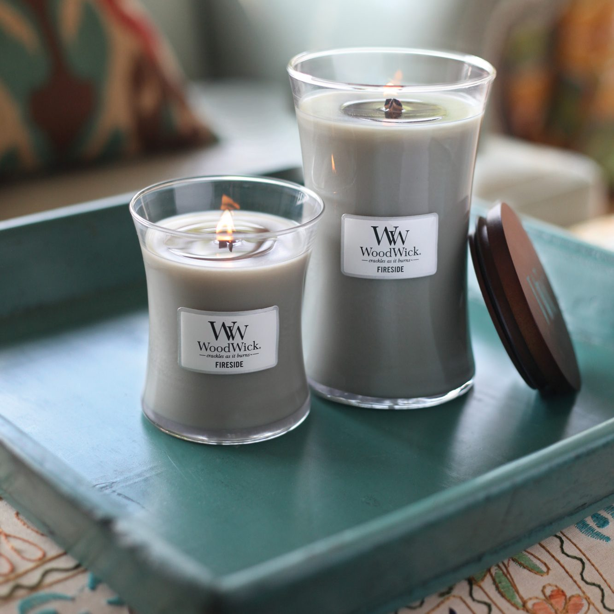

Wat is WoodWick nou?
WoodWick is een kaars met een houten lont, dit is erg nieuw en ze zijn de eerste die dit gedaan hebben. Elke WoodWick kaars is van hoge kwaliteit, heeft lekkere geuren en zacht knisperend geluid
Waar kan de kaars geplaatst worden?
Zo goed als overal!
Hij staat vooral mooi op een eettafel of in de zithoek

Je kan de kaars goed combineren met andere accessoires dus probeer er wat bij te zetten!

Waar moet ik vooral op letten bij een kaars?
- Laat de kaars altijd 2 uur branden en als het kan zelfs 3 tot 4 zodat je de beste geur en pool resultaat uit de kaars haalt.
- Let op dat de lont altijd 0,5 cm boven de kaars uitsteekt. Dit zorgt voor een goede verbranding.
- Je kan een WoodWick lont trimmen door te wachten tot de kaars gestold is en dan kan je het lontje rustig afsnijden.
- Doe de deksel pas weer op de kaars als deze helemaal afgekoeld en gestold is.
- Je kan de deksel van de kaars gebruiken als onderzetter zodat de ondergrond niet te warm kan worden of beschadigen.
Wat voor geuren zijn er?
Maten:
- Large: deze kaars heeft een afmeting van, 10cm breed 17,5cm hoog en heeft 130 branduren.
- Medium: deze kaars heeft een afmeting van, 10cm breed 11,5cm hoog en heeft 60 branduren.
- Mini: deze kaars heeft een afmeting van, 7cm breed 8 cm hoog en heeft 20 branduren.
- HearthWick Flame® Ellipse kaars heeft een afmeting van, 19.5 cm lang en 11.5 cm breed en 9 cm hoog deze heeft 50 branduren.
De geurkaarsen keuze is enorm maar dit zijn de top 5 kaarsen!
Aanbevelingen?
De geur van de maand is altijd leuk als je het een keer wil uitproberen.
Deze kaarsen zijn de hele maand met 25% korting te verkrijgen.
Deze maand zijn het de kaarsen: